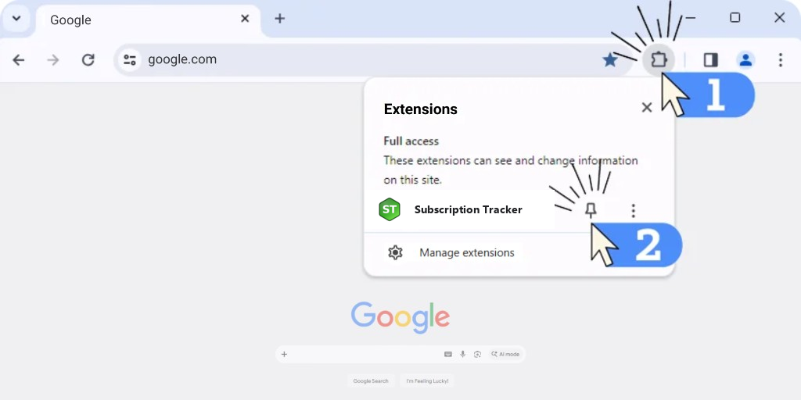
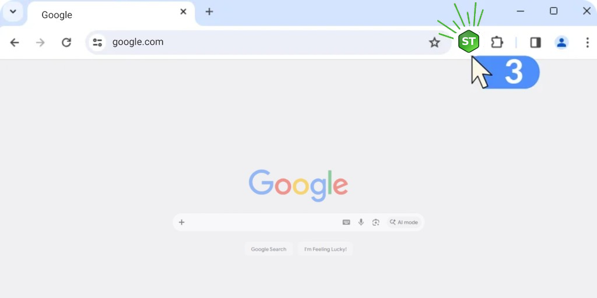

Thanks for choosing Subscription Tracker!
1. Please make sure to pin it for fast access:

2. Click this icon to open our extension:

1. Please make sure to pin it for fast access:

2. Click this icon to open our extension:
